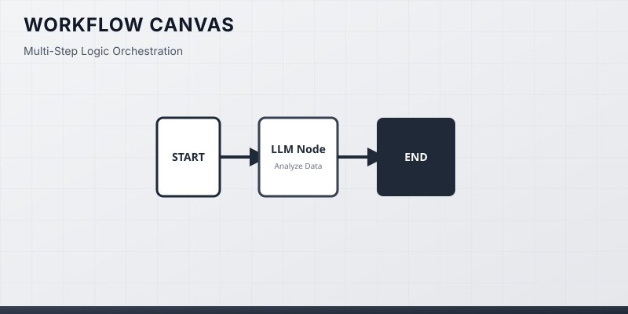

03. Deep Dive: Workflow & MCP
AI 核心技术深度拆解：为什么用、用来做什么、如何使用 (Workflow & MCP)
⚡ Workflow (工作流编排)
确定性 + LLM 节点
1. 为什么有？
纯 LLM 自由度过高，复杂业务需要严格约束执行路线。
2. 用来干什么？
拖拽 API 请求、条件分支与大模型处理形成连线。
3. 为什么要用？
兼顾 AI 智能理解与传统软件的确定性稳定性。
4. 如何使用？
在 Dify/Coze 画布画流程图并配置参数。

🔥 热门爆款：
Dify / Coze (扣子)
：自媒体热点自动抓取总结、企业售后客服机器人。
🔌 MCP 协议 (模型上下文协议)
安全数据插拔
1. 为什么有？
大模型无法直接安全读取本地数据库、浏览器与私有文件。
2. 用来干什么？
制定统一接口标准，AI 像插 USB 一样安全接入外部数据。
3. 为什么要用？
解耦开发，一次编写 MCP 即可供所有支持的大模型使用。
4. 如何使用？
在 Cursor / Claude 配置文件中指定 MCP 服务终端。
🔥 热门爆款：
Cursor MCP / Chrome DevTools MCP
：AI 操控浏览器自动化抓网页、读取 Git 历史。